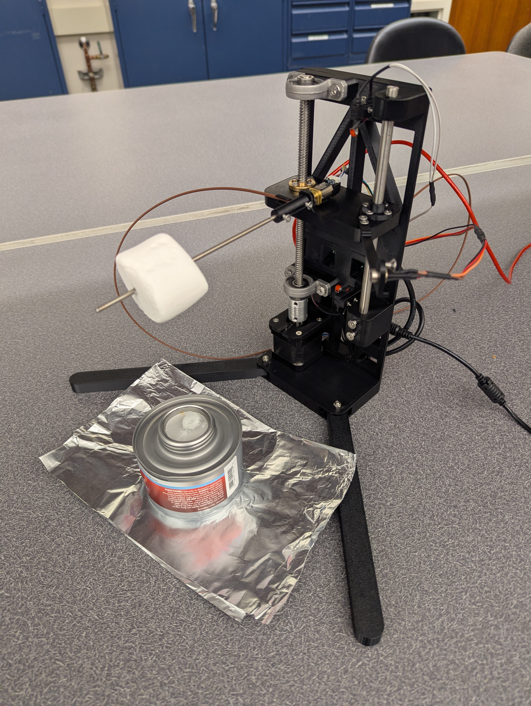
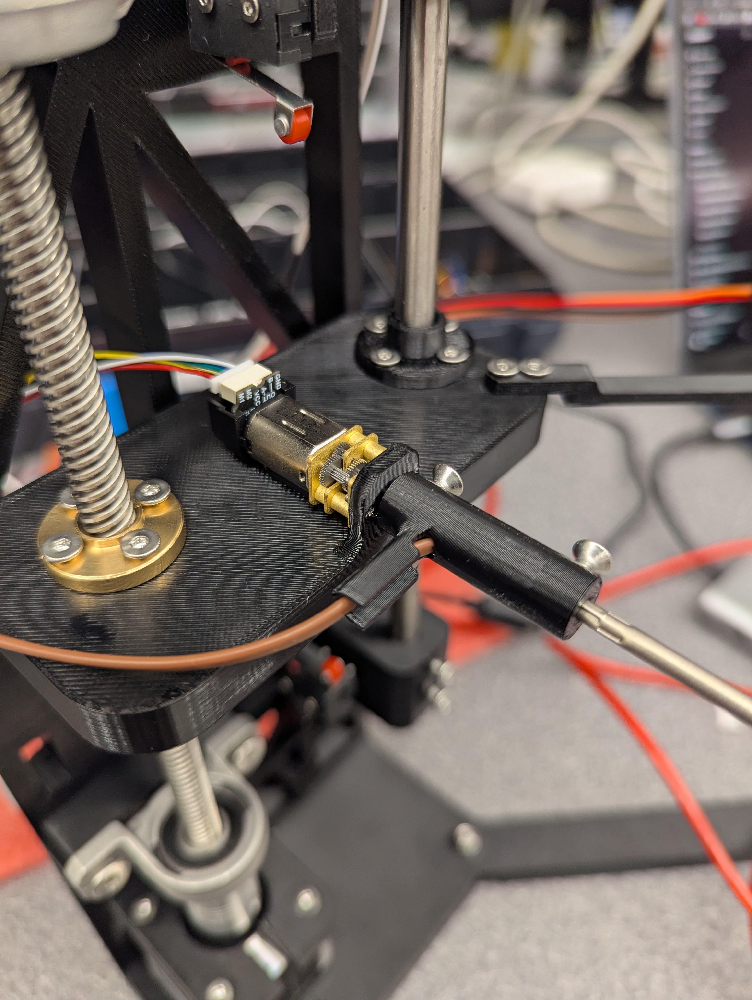
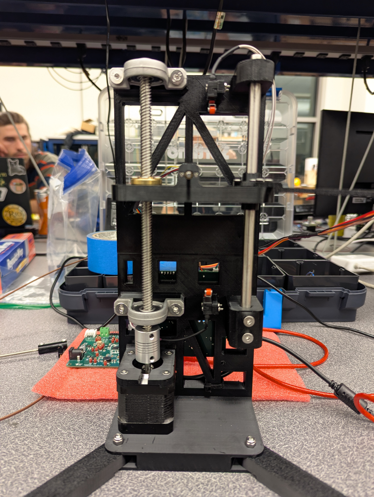
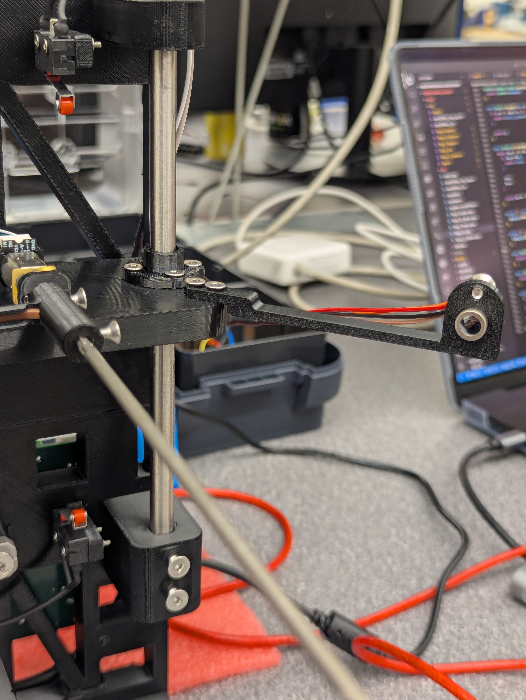
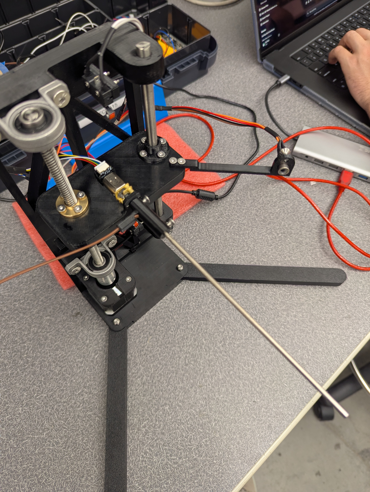

Loading...
Searching...
No Matches
ME507 Marshmallow Cooker
ME507 Marshmallow Cooker
Project Overview
The ME507 Marshmallow Cooker is an automated marshmallow roasting system designed to monitor temperature and control marshmallow position and orientation during cooking.

The system uses both infrared and thermocouple-based temperature measurements to evaluate cooking conditions while a rotating mechanism and vertical positioning mechanism control the marshmallow relative to the heat source.
Major Hardware
Rotating Motor Assembly
The rotating axis uses a Pololu 5120 gearmotor with integrated quadrature encoder. A DRV8833 motor driver provides bidirectional PWM control from the STM32 microcontroller.

The encoder provides position feedback that allows the software to estimate angular position and rotational velocity.
Vertical Motion System
Vertical positioning is performed using a stepper motor controlled by a TMC2209 driver. The stepper mechanism changes the distance between the marshmallow and the heat source.

Top and bottom limit switches are used to prevent the mechanism from exceeding its allowable travel range.
Temperature Sensors
MLX90614 Infrared Temperature Sensor
The MLX90614 provides non-contact temperature measurements of the marshmallow surface. This allows surface temperature to be monitored without physically touching the marshmallow.

MCP9600 Thermocouple Amplifier
The MCP9600 interfaces with a Type T thermocouple and provides direct hot-junction temperature measurements over I2C.

The thermocouple is used to measure the flame temperature.
Custom PCB

A custom PCB was designed to integrate:
- STM32F411 microcontroller
- MCP9600 thermocouple amplifier
- MLX90614 infrared temperature sensor
- DRV8833 motor driver
- TMC2209 stepper motor driver interface
- Encoder inputs
- Limit switch inputs

The PCB simplifies wiring and provides a compact platform for system integration.
Software Architecture
The firmware is written in C++ using STM32CubeIDE and STM32 HAL.
Major software modules include:
- DRV8833 motor driver
- MCP9600 thermocouple driver
- MLX90614 infrared sensor driver
- Encoder driver
- Rotational motor driver
- Z-axis motor driver
- Z-axis limit switch driver
Hardware-specific functionality is encapsulated within dedicated driver classes, allowing higher-level control logic to remain independent of hardware implementation details.
Main Control Structure
The firmware operates from a central control loop which periodically:
- Reads temperature sensors
- Updates motor state
- Monitors limit switches
- Executes motion commands
- Reports diagnostic information over UART
This structure allows individual subsystems to be tested independently while supporting future integration into a complete cooking sequence.
Mathematical Modeling and Data Processing
Encoder Processing
Quadrature encoder counts are accumulated to determine motor position and estimate angular displacement.
Gear ratio and encoder resolution are used to convert encoder counts into output shaft rotation.
Temperature Processing
The MLX90614 provides calibrated infrared temperature measurements.
The MCP9600 converts thermocouple voltage measurements into hot-junction temperatures using internal cold-junction compensation.
Measurements from both sensors can be compared to evaluate sensor performance and cooking conditions.
Repository Structure
ME507MarshmallowCooker
├── Marshmallow_Cooker
│ ├── Core
│ └── Drivers
├── docs
└── Doxyfile